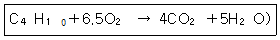
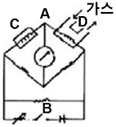

가스산업기사 (2011-03-20 기출문제)
1과목: 연소공학
1. 메탄 70%, 에탄 20%, 프로판 8% 부탄 1%로 구성되는 혼합가스의 공기 중 폭발하한계는 약 몇 v%인가? (단, 메탄, 에탄, 프로판, 부탄의 폭발하한계치는 각각 5.0, 3.0, 2.1, 1.9이다.)
- 3.5
- 4
- 4.5
- 5
(정답률: 81%)

2. 다음 연소에 대한 설명 중 옳은 것은?
- 착화온도와 연소온도는 항상 같다.
- 이론연소온도는 실제연소온도보다 높다.
- 일반적으로 연소온도는 인화점보다 상당히 낮다.
- 연소온도가 그 인화점 보다 낮게 되어도 연소는 계속 된다.
(정답률: 87%)
3. 시안화수소를 장기간 저장하지 못하는 주된 이유는?
- 산화폭발
- 분해폭발
- 중합폭발
- 분진폭발
(정답률: 95%)
4. 이상기체에 대한 설명으로 틀린 것은?
- 아보가드로의 법칙에 따른다.
- 압력과 부피의 곱은 온도에 비례한다.
- 온도에 대비하여 일정한 비열을 가진다.
- 기체분자간의 인력은 일정하게 존재하는 것으로 간주한다.
(정답률: 67%)
5. 기체연료의 연소에서 일반적으로 나타나는 연소의 형태는?
- 확산연소
- 증발연소
- 분무연소
- 액면연소
(정답률: 94%)
6. 0℃, 1atm에서 2ℓ의 산소와 0℃, 2atm에서 3ℓ의 질소를 혼합하여 1ℓ로 하면 압력은 몇 atm이 되는가?
- 1
- 2
- 6
- 8
(정답률: 73%)
7. 가스연료의 연소에 있어서 확산염을 사용할 경우 예혼합염을 사용하는 것에 비해 얻을 수 있는 장점이 아닌 것은?
- 역화의 위험이 없다.
- 가스량의 조절범위가 크다
- 가스의 고온 예열이 가능하다.
- 개방대기 중에서도 완전연소가 가능하다.
(정답률: 56%)
8. (CO2)max %는 공기비(m)가 어떤 때를 말하는가?
- 0
- 1
- 2
- ∞
(정답률: 84%)
9. 폭발과 관련한 가스의 성질에 대한 설명으로 틀린 것은?
- 연소속도가 큰 것일수록 위험하다.
- 인화온도가 낮을수록 위험성은 커진다.
- 안전간격이 큰 것일수록 위험성이 있다.
- 가스의 비중이 크면 낮은 곳으로 모여 있게 된다.
(정답률: 93%)
10. 오토사이클에서 압축비(c)가 10일 때 열효율은 약 몇 %인가? (단, 비열비[K]는 1.4이다.)
- 58.2
- 60.2
- 62.2
- 64.2
(정답률: 67%)
11. 폭발에 대한 용어 중 DID에 대하여 가장 잘 나타낸 것은?
- 어느 온도에서 가열하기 시작하여 발화에 이를 때까지의 시간을 말한다.
- 폭발등급 표시 시 안전간격을 나타낼 때의 거리를 말한다.
- 최초의 완만한 연소가 격렬한 폭굉으로 발전할 때까지의 거리를 말한다.
- 폭굉이 전파되는 속도를 의미한다.
(정답률: 85%)
12. 폭발범위(폭발한계)에 대한 설명으로 옳은 것은?
- 폭발범위 내에서만 폭발한다.
- 폭발상한계에서만 폭발한다.
- 폭발상한계 이상에서만 폭발한다.
- 폭발하한계 이하에서만 폭발한다.
(정답률: 94%)
13. 아세틸렌가스의 위험도(H)는 약 얼마인가?
- 21
- 23
- 31
- 33
(정답률: 86%)
14. 완전연소의 필요조건에 관한 설명으로 틀린 것은 ?
- 연소실의 온도는 높게 유지하는 것이 좋다.
- 연소실 용적은 장소에 따라서 작게 하는 것이 좋다.
- 연료의 공급량에 따라서 적당한 공기를 사용하는 것이 좋다.
- 연료는 되도록이면 인화점 이상 예열하여 공급하는 것이 좋다.
(정답률: 74%)
15. 가연성가스의 연소에 대한 설명으로 옳은 것은?
- 폭굉속도는 보통 연소속도의 10배 정도이다.
- 폭발범위는 온도가 높아지면 일반적으로 넓어진다.
- 혼합가스는 폭굉속도 1000m/s 이하이다.
- 가연성 가스와 공기의 혼합가스에 질소를 첨가하면 폭발 범위의 상한치는 크게 된다.
(정답률: 87%)
16. 메탄의 완전연소 반응식을 옳게 나타낸 것은?
- CH4＋2O2 → CO2＋2H2O
- CH4＋3O2 → 2CO2＋2H2O
- CH4＋3O2 → 2CO2＋3H2O
- CH4＋5O2 → 3CO2＋4H2O
(정답률: 84%)
17. 아세톤, 톨루엔, 벤젠이 제4류 위험물로 분류되는 주된 이유는?
- 분해 시 산소를 발생하여 연소를 돕기 때문에
- 니트로기를 함유한 폭발성 물질이기 때문에
- 공기보다 밀도가 큰 가연성 증기를 발생시키기 때문에
- 물과 접촉하여 많은 열을 방출하여 연소를 촉진시키기 때문에
(정답률: 80%)
18. 고위발열량과 저위발열량의 차이는 연료의 어떤 성분 때문에 발생하는가?
- 유황과 질소
- 질소와 산소
- 탄소와 수분
- 수소와 수분
(정답률: 76%)
19. 0℃, 1기압에서 C3H8 5㎏의 체적은 약 몇 m3인가? (단, 이상기체로 가정하고, C의 원자량은 12, H의 원자량은 1이다.)
- 0.63
- 15.4
- 2.55
- 3.67
(정답률: 63%)
20. 일산화탄소와 수소의 부피비가 3 : 7인 혼합가스의 온도 100℃, 50atm에서의 밀도는 약 몇 g/ℓ인가? (단, 이상기체로 가정한다.)
- 16
- 18
- 21
- 23
(정답률: 38%)
2과목: 가스설비
21. 금속 플렉시블 호스의 제조기준에의 적합여부에 대하여 실시하는 생산단계검사의 검사종류별 검사항목이 아닌 것은?
- 구조검사
- 치수검사
- 내압시험
- 기밀시험
(정답률: 50%)
22. 천연가스의 비점은 약 몇 ℃인가?
- -84
- -162
- -183
- -192
(정답률: 85%)
23. 다음 중 회전펌프가 아닌 것은?
- 기어펌프
- 나사펌프
- 베인펌프
- 제트펌프
(정답률: 84%)
24. LPG 저장탱크에 관한 설명으로 틀린 것은?
- 구형탱크는 지진에 의한 피해방지를 위해 2중으로 한다.
- 지상탱크는 단열재를 사용한 2중 구조로 하여 진공시키면 LNG도 저장할 수 있다.
- 탱크 재료는 고장력강으로 제작된다.
- 지하암반을 이용한 저장시설에서는 외부에서 압력이 작용되고 있다.
(정답률: 64%)
25. 도시가스제조 원료의 저장 설비에서 액화석유가스 (LPG)저장법으로 옳은 것은?
- 가압식저장법, 저온식(냉동식)저장법
- 고온저압식저장법, 저온식(냉동식)저장법
- 가압식저장법, 고온증발식저장법
- 고온저압식저장법, 예열증발식저장법
(정답률: 72%)
26. 접촉분해프로세스로 도시가스 제조 시 일정 온도, 압력 하에서 수증기와 원료 탄화수소와의 중량비(수증기비)를 증가시키면 일어나는 현상은?
- CH4가 많고 H2가 적은 가스가 발생한다.
- CO의 변성반응이 촉진된다.
- CH4가 많고 CO가 적은 가스가 발생한다.
- CH4의 수증기 개질을 억제한다.
(정답률: 54%)
27. 터보 압축기에 주로 사용되는 밀봉장치 형식이 아닌 것은?
- 테프론 시일
- 메카니컬 시일
- 레비린스 시일
- 카본 시일
(정답률: 65%)
28. 정압기의 작동원리 대한 설명으로 틀린 것은?
- 작동식에서 2차 압력이 설정압력보다 높은 경우는 다이어프램을 들어 올리는 힘이 증가한다.
- 파일럿식에서 2차 압력이 설정압력보다 높은 경우 파일럿 다이어프램을 밀어 올리는 힘이 스프링과 작용하여 가스량이 감소한다.
- 작동식에서 2차 압력이 설정압력보다 낮은 경우는 메인 밸브를 열리게 하여 가스량을 증가시킨다.
- 파일럿식에서 2차 압력이 설정압력보다 낮은 경우는 다이아프램에 작용하는 힘과 스프링 힘에 의해 가스량이 감소한다.
(정답률: 60%)
29. 고압장치 배관에 발생된 열응력을 제거하기 위한 이음이 아닌 것은?
- 루프형
- 슬라이드형
- 벨로우즈형
- 플랜지형
(정답률: 83%)
30. LPG 충전소 내의 가스 사용시설 수리에 대한 설명으로 옳은 것은?
- 화기를 사용하는 경우에는 설비내부의 가연성 가스가 폭발하한계의 1/4 이하인 것을 확인하고 수리한다.
- 충격에 의한 불꽃에 가스가 인화할 염려는 없다고 본다.
- 내압이 완전히 빠져 있으면 화기를 사용해도 좋다.
- 볼트를 조일 때는 한 쪽만 잘 조이면 된다.
(정답률: 93%)
31. 황동(Brass)과 청동(Bronze)은 구리와 다른 금속과의 합금이다. 각각 무슨 금속인가?
- 주석, 인
- 알루미늄, 아연
- 아연, 주석
- 알루미늄, 납
(정답률: 86%)
32. 펌프에서 발생하는 수격현상의 방지법으로 틀린 것은?
- 관내의 유속 흐름 속도를 가능한 적게 한다.
- 서지(surge)탱크를 과내에 설치한다.
- 플라이휠을 설치하여 펌프의 속도가 급변하는 것을 막는다.
- 밸브는 펌프 주입구에 설치하고 밸브를 적당히 제어 한다.
(정답률: 72%)
33. 일반가스의 공급선에 사용되는 밸브 중 유체의 유량 조절은 용이하나 밸브에서 압력 손실이 커 고압의 대구경 밸브로서는 부적합한 밸브는?
- 게이트(Gate)밸브
- 글로브(Glove)밸브
- 체크(Check)밸브
- 볼(Ball)밸브
(정답률: 82%)
34. 황산염 환원 박테리아가 번식하는 토양에서 부식방지를 위한 방식전위는 얼마 이하가 적당한가?
- -0.8V
- -0.85V
- -0.9V
- -0.95V
(정답률: 59%)
35. 고압가스장치 금속재료의 기계적 성질 중 어느 온도 이상에서 재료에 일정한 하중을 가한 순간에 변형을 일으킬 뿐만 아니라 시간의 경과와 더불어 변형이 증대하고 때로 파괴되는 경우가 있다. 이러한 현상을 무엇이라고 하는가?
- 피로 한도
- 크리프(Creep)
- 탄성계수
- 충격치
(정답률: 91%)
36. 공기액화분리장치에 들어가는 공기 중 아세틸렌가스가 혼입되면 안 되는 주된 이유는?
- 산소와 반응하여 산소의 증발을 방해한다.
- 응고되어 돌아다니다가 산소 중에서 폭발할 수 있다.
- 파이프 내에서 동결되어 파이프가 막히기 때문이다.
- 질소와 산소의 부리작용을 방해하기 때문이다.
(정답률: 86%)
37. 공기액화분리장치에서 산소를 압축하는 왕복동압축기의 1시간당 분출가스량이 6000㎏이고, 27℃에서의 안전밸브 작동압력이 8㎫라면 안전밸브의 유효분출 면적은 약 몇 cm2인가?
- 0.52
- 0.75
- 0.99
- 1.26
(정답률: 44%)
38. 메탄가스에 대한 설명으로 옳은 것은?
- 공기 중에 30%의 메탄가스가 혼합된 경우 점화 하면 폭발한다.
- 담청색의 기체로서 무색의 화염을 낸다.
- 고온에서 수증기와 작용하면 일산화탄소와 수소를 생성한다.
- 올레핀계탄화수소로서 가장 간단한 형의 화합물이다.
(정답률: 81%)
39. 다음 중 조정압력이 57~83㎪일 때 사용되는 압력조정기는?
- 2단 감압식 1차용조정기
- 2단 감압식 2차용조정기
- 자동절체식 일체형준저압조정기
- 1단 감압식 준저압조정기
(정답률: 64%)
40. 강관 이음재 중 구경이 서로 다른 배관을 연결시킬 때 주로 사용되는 것은?
- 엘보
- 리듀서
- 티
- 소켓
(정답률: 89%)
3과목: 가스안전관리
41. 액화석유가스 사용시설에 관경 20㎜인 가스배관을 노출하여 설치할 경우 배관이 움직이지 않도록 고정 장치를 몇 m마다 설치하여야 하는가?
- 1m
- 2m
- 3m
- 4m
(정답률: 84%)
42. 프로판(C3H8)과 부탄(C4H10)이 동일한 몰(㏖)비로 구성된 LP가스의 폭발하한이 공기 중에서 1.8v%라면 높이 2m, 넓이 9m2, 압력 1atm, 온도 20℃인 주방에 최소 몇 g의 가스가 유출되면 폭발할 가능성이 있는 가? (단, 이상기체로 가정한다.)
- 4⑤
- 593
- 688
- 782
(정답률: 52%)
43. 도시가스 사업자는 가스공급시설을 효율적으로 안전 관리하기 위하여 도시가스 배관망을 전산화하여야 한다. 전산화 내용에 포함되지 않는 사항은?
- 배관의 설치도면
- 정압기의 시방서
- 배관의 시공자, 시공연월일
- 배관의 가스흐름방향
(정답률: 83%)
44. 사고를 일으키는 장치의 고장이나 운전자 실수의 상관관계를 연역적으로 분석하는 위험성 평가 기법은?
- 체크리스트(Check list)법
- 위험과 운전분석기법(HAZOP)
- 결함수분석기법(FTA)
- 사건수분석기법(ETA)
(정답률: 50%)
45. 물분무장치 등은 저장탱크의 외면에서 몇 m 이상 떨어진 위치에서 조작이 가능하여야 하는가?
- 5m
- 10m
- 15m
- 20m
(정답률: 78%)
46. . 포스핀(PH3)의 저장과 취급 시 주의사항에 대한 설명으로 가장 거리가 먼 것은?
- 환기가 양호한 곳에서 취급하고 용기는 40℃ 이하를 유지한다.
- 수분과의 접촉을 금지하고 정전기발생 방지시설을 갖춘다.
- 가연성이 매우 강하여 모든 발화원으로부터 격리 한다.
- 방독면을 비치하여 누출 시 착용한다.
(정답률: 83%)
47. 압력이 몇 ㎫ 이상인 압축가스를 용기에 충전하는 경우 압축기와 가스 충전용기 보관장소 사이의 벽을 방호벽 구조로 하여야 하는가?
- 8.7
- 9.8
- 10.8
- 11.7
(정답률: 70%)
48. 고압가스의 운반기준에서 동일 차량에 적재하여 운반할 수 없는 것은?
- 염소와 아세틸렌
- 질소와 산소
- 아세틸렌과 산소
- 프로판과 부탄
(정답률: 88%)
49. 고압가스제조시설로서 정밀안전검진을 받아야 하는 노후시설은 최초의 완성검사를 받는 날부터 얼마를 경과한 시설을 말하는가?
- 7년
- 10년
- 15년
- 20년
(정답률: 62%)
50. 주택은 제 몇 종 보호실로 분류되는가?
- 제0종
- 제1종
- 제2종
- 제4종
(정답률: 88%)
51. 아세틸렌 용기는 다공성물질 검사방법에 해당하지 않는 것은?
- 진동시험
- 부분가열시험
- 역화시험
- 파괴시험
(정답률: 68%)
52. 부탄가스의 완전연소방정식을 다음과 같이 나타낼 때 화학양론 농도(Cst)는 몇 %인가? (단, 공기 중 산소는 21%이다.)

- 1.8%
- 3.1%
- 5.5%
- 8.9%
(정답률: 51%)
53. 다음 합격용기 등의 각인사항의 기호 중 용기의 내압시험 압력을 표시하는 기호는?
- TW
- TP
- TV
- FP
(정답률: 92%)
54. 다음 독성가스 중 공기보다 가벼운 가스는?
- 황화수소
- 암모니아
- 염소
- 산화에틸렌
(정답률: 71%)
55. 아세틸렌가스를 용기에 충전하는 장소 및 충전용기 보관장소에는 화재 등에 의한 파열을 방지하기 위하여 무엇을 설치해야 하는가?
- 방화설비
- 살수장치
- 냉각수펌프
- 경보장치
(정답률: 82%)
56. 고압가스 특정제조시설 중 배관의 누출확산 방지를 위한시설 및 기술기준으로 옳지 않은 것은?
- 시가지, 하천, 터널 및 수로 중에 배관을 설치하는 경우에는 누출가스의 확산방지조치를 한다.
- 사질토 등의 특수성 지반(해저 제외) 중에 배관을 설치하는 경우에는 누출가스의 확산방지조치를 한다.
- 고압가스의 온도와 압력에 따라 배관의 유지관리에 필요한 거리를 확보한다.
- 독성가스의 용기보관실은 누출되는 가스의 확산을 적절하게 방지할 수 있는 구조로 한다.
(정답률: 57%)
57. 고압가스제조자 또는 고압가스판매자가 실시하는 용기의 안전점검 및 유지관리 사항에 해당되지 않은 것은?
- 용기의 도색상태
- 용기관리 기록대장의 관리상태
- 재검사기간 도래여부
- 용기밸브의 이탈방지 조치여부
(정답률: 85%)
58. 시안화수소 충전작업의 기준으로 틀린 것은?
- 용기에 충전하는 시안화수소는 순도가 98% 이상 이어야 한다.
- 용기에 충전하는 시안화수소는 아황산가스 또는 황산 등의 안정제를 첨가한 것이어야 한다.
- 시안화수소를 충전한 용기는 충전 후 24시간 정치하고, 그 후 1일 1회 이상 질산구리벤젠 등의 시험지로 가스의 누출검사를 하여야 한다.
- 순도가 99% 이상으로서 착색된 것은 충전한 후 60일이 경과되기 전에 다른 용기에 옮겨 충전하지 않아도 된다.
(정답률: 85%)
59. 차량에 고정된 탱크의 내용적에 대한 설명으로 틀린 것은?
- 액화천연가스 탱크의 내용적은 1만 8천ℓ를 초과할 수 없다.
- 산소 탱크의 내용적은 1만 8천ℓ를 초과할 수 없다.
- 염소 탱크의 내용적은 1만 2천ℓ를 초과할 수 없다.
- 암모니아 탱크의 내용적은 1만 2천ℓ를 초과할 수 없다.
(정답률: 73%)
60. 독성가스와 중화제(흡수제)가 잘못 연결된 것은?
- 암모니아 - 다량의 물
- 염소 - 소석회
- 시안화수소 - 탄산소다 수용액
- 황화수소 - 가성소다 수용액
(정답률: 60%)
4과목: 가스계측
61. 유기 화합물의 분리에 가장 적합한 기체크로마토그래피의 검출기는?
- FID
- FPD
- ECD
- TCD
(정답률: 79%)
62. 다음은 가연성가스 검지법 중 접촉연소법 검지회로이다. 보상소자는 어느 부분인가?

- A
- B
- C
- D
(정답률: 70%)
63. 다음 중 바이메탈 온도계에 사용되는 변환 방식은?
- 기계적 변환
- 광학적 변환
- 유도적 변환
- 전기적 변환
(정답률: 80%)
64. 다음 중 계통오차가 아닌 것은?
- 계기오차
- 환경오차
- 과오오차
- 이론오차
(정답률: 78%)
65. 기체크로마토그래피에 대한 설명으로 틀린 것은?
- 액체크로마토그래피보다 분석 속도가 빠르다.
- 컬럼에 사용되는 액체 정지상은 휘발성이 높아야 한다.
- 운반기체로서 화학적으로 비활성인 헬륨을 주로 사용한다.
- 다른 분석기기에 비하여 감도가 뛰어나다.
(정답률: 74%)
66. 분별연소법을 사용하여 가스를 분석할 경우 분별적으로 완전연소시키는 가스는?
- 수소, 탄화수소
- 이산화탄소, 탄화수소
- 일산화탄소, 탄화수소
- 수소, 일산화탄소
(정답률: 62%)
67. 다음 가스 중 검지관에 위한 측정농도의 범위 및 검지 한도로서 틀린 것은?(오류 신고가 접수된 문제입니다. 반드시 정답과 해설을 확인하시기 바랍니다.)
- C2H2 : 0~0.3%, 10[ppm]
- H2 : 0~1.5%, 250[ppm]
- C3H8 : 0~0.1%, 1[ppm]
- C3H 3 : 0~0.1%, 10[ppm]
(정답률: 49%)
68. 10호의 가스미터로 1일 4시간씩 20일간 가스미터가 작동하였다면 이때 총 최대 가스 사용량은 얼마인 가? (단, 압력차수주는 30[㎜H2O]이다.)
- 400ℓ
- 800ℓ
- 400m3
- 800m3
(정답률: 58%)
69. 차압식 유량계에서 압력차가 처음보다 2배 커지고 관의 지름이 1/2로 되었다면, 나중 유랑(O2)과 처음 유량(O3)과의 관계로 옳은 것은? (단, 나머지 조건은 모두 동일하다.)
- O2 = 0.25 Q 1
- O2 = 0.35 Q 1
- O2 = 0.71 Q 1
- O2 = 1.41 Q 1
(정답률: 57%)
70. 다음 중 추량식 가스미터로 부류되는 것은?
- 습식형
- 루트형
- 막식형
- 터빈형
(정답률: 72%)
71. 막식 가스미터 고장의 종류 중 부동(不動)의 의미를 가장 바르게 설명한 것은?
- 가스가 크랭크축이 녹슬거나 밸브와 밸브시트가 타르(tar)접착 등으로 통과하지 않는다.
- 가스의 누출로 통과하나 정상적으로 미터가 작동 하지 않아 부정확한 양만 측정된다.
- 가스가 미터는 통과하나 계량막의 파손, 밸브의 탈락 등으로 미터지침이 작동하지 않은 것이다.
- 날개나 조절기에 고장이 생겨 회전장치에 고장이 생긴 것이다.
(정답률: 87%)
72. 진동이 일어나는 장치의 진동을 억제시키는데 가장 효과적인 제어동작은?
- 뱅뱅 동작
- 미분 동작
- 비례 동작
- 적분 동작
(정답률: 69%)
73. 다음 중 오리피스, 플로노즐, 벤두리미터 유량계의 공통적인 특징에 해당하는 것은?
- 압력강하 측정
- 직접 계량
- 초음속 유체만 유량 계측
- 직관부 필요 없음
(정답률: 89%)
74. 초음파 레벨 측정기의 특징으로 옳지 않은 것은?
- 측정대상에 직접 접촉하지 않고 레벨을 측정할 수 있다.
- 부식성 액체나 유속이 큰 수로의 레벨도 측정할 수 있다.
- 측정범위가 넓다.
- 고온, 고압의 환경에서도 사용이 편리하다.
(정답률: 61%)
75. 아르키메데스 부력의 원리를 이용한 액면계는?
- 기포식 액면계
- 차압식 액면계
- 정전용량식 액면계
- 편위식 액면계
(정답률: 78%)
76. MAX 2.0[m3/h], 0.6[ℓ/rev]라 표시되어 있는 가스미터가 1시간당 40회전 하였다면 가스유량은?
- 12[ℓ/rev]
- 24[ℓ/rev]
- 48[ℓ/rev]
- 80[ℓ/rev]
(정답률: 74%)
77. 진공에 대한 폐관식 압력계로서 표준 진공계로 사용 되는 것은?
- 맥라우드 진공계
- 피라니 진공계
- 서미스터 진공계
- 전리 진공계
(정답률: 59%)
78. 오리피스관이나 노즐과 같은 조임기구에 의한 가스의 유량 측정에 대한 설명으로 틀린 것은?
- 측정하는 압력은 동압의 차이다.
- 유체의 점도 및 밀도를 알고 있어야 한다.
- 하류 측과 상류 측의 절대압력의 비가 0.75 이상이어야 한다.
- 조임기구의 재료의 열팽창계수를 알아야 한다.
(정답률: 50%)
79. 2차 압력계이며, 탄성을 이용하는 대표적인 압력계는?
- 부르돈관 압력계
- 자유피스톤형 압력계
- 마크레오드식 압력계
- 피스톤식 압력계
(정답률: 86%)
80. 전기저항 온도계의 온도 검출용 측온 저항체의 재료로 비례성이 좋으나, 고온에서 산화되며, 사용 온도 범위가 0~120℃ 정도인 것은?
- 백금
- 니켈
- 구리
- 서미스터(thermistor)
(정답률: 69%)
폭발하한계 = (각 성분의 폭발하한계 × 각 성분의 부피 비율)의 합
따라서, 주어진 혼합가스의 폭발하한계는 다음과 같이 계산할 수 있다.
폭발하한계 = (5.0 × 0.7) + (3.0 × 0.2) + (2.1 × 0.08) + (1.9 × 0.01) = 3.97
따라서, 폭발하한계는 약 3.97 v%이다. 이 값은 주어진 보기 중에서 4에 가장 가깝기 때문에, 정답은 4이다.